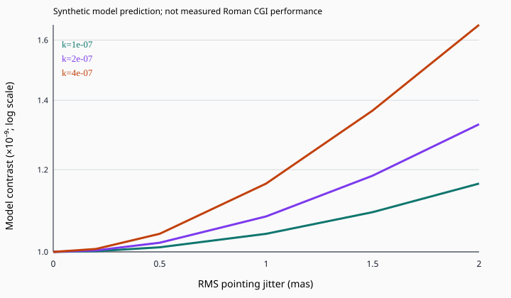

Report source
SHA-256, LF-normalised text
f16f7d983c424f7199aeba4608d592a16e82d39a305bdfa1347fd3f051ec3e2dBrowse 5 versioned evidence files. Table previews simply display stored rows. Consult the project report for the source, processing steps, and inference assumptions.

f16f7d983c424f7199aeba4608d592a16e82d39a305bdfa1347fd3f051ec3e2dda93d1fb7f4168975f21e6b758b605edcf8b2e1545bcf117c1fe01efe51ac7f50511cc955c81e6168d11071d637277afe089a9949473f9e73fe22c5f22c52e88| jitter_mas_rms | coupling | contrast |
|---|---|---|
| 0.0 | 1e-07 | 1e-09 |
| 0.2 | 1e-07 | 1.0016379344563216e-09 |
| 0.5 | 1e-07 | 1.0102370903520099e-09 |
| 1.0 | 1e-07 | 1.0409483614080394e-09 |
8eeb85db7ddc4ea0082d3e27de787ff993bd5df3dccced4c1f6a642b2773964098bc9ede78130dba499bed9e6c640c99a4a1c9fee7b7c40ab7c2f230357a8907SHA-256 values verify the stored files. They do not independently validate the scientific analysis. Rebuild this page with python scripts/evidence_catalog.py followed by python scripts/render_evidence_page.py.